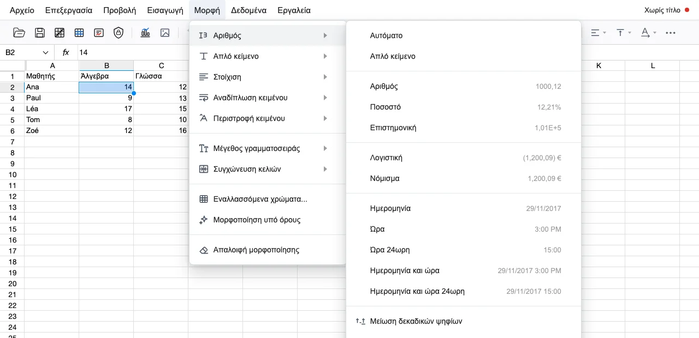

Το περιβάλλον

Από πάνω προς τα κάτω: η γραμμή μενού, η γραμμή κουμπιών, η γραμμή τύπων, το φύλλο, οι καρτέλες φύλλων και το ζουμ.
Τα μενού
| Μενού | Περιεχόμενο |
|---|---|
| Αρχείο | άνοιγμα, αποθήκευση, εκτύπωση |
| Επεξεργασία | αναίρεση, επανάληψη, συμπλήρωση προς τα κάτω, δεξιά |
| Προβολή | γραμμές πλέγματος, σταθεροποίηση |
| Εισαγωγή | εικόνα, γράφημα, πλαίσιο ελέγχου, αναπτυσσόμενη λίστα |
| Μορφή | αριθμός, κείμενο, στοίχιση, συγχώνευση, εναλλασσόμενα χρώματα, μορφοποίηση υπό όρους |
| Δεδομένα | ταξινόμηση και φίλτρο |
| Εργαλεία | προστασία, αυτό το εγχειρίδιο (Εγχειρίδιο χρήσης), DocTools, πηγαίος κώδικας, έκδοση (Σχετικά...) |
Ένα σημάδι δηλώνει ενεργή επιλογή: ορατό πλέγμα, σταθεροποιημένα κελιά, έντονα, φίλτρο, προστατευμένο βιβλίο.

Η γραμμή κουμπιών
| Κουμπί | Ρόλος |
|---|---|
| άνοιγμα, αποθήκευση | |
| εμφάνιση ή απόκρυψη του πλέγματος | |
| εναλλασσόμενα χρώματα | |
| μορφοποίηση υπό όρους | |
| προστασία· γαλάζιο όταν το βιβλίο προστατεύεται | |
| εισαγωγή γραφήματος | |
| εισαγωγή εικόνας | |
| αναίρεση, επανάληψη | |
| εκκαθάριση μορφοποίησης | |
| ποσοστό, λιγότερα ή περισσότερα δεκαδικά | |
| Αυτόματο, Arial, 10 | μορφή αριθμού, γραμματοσειρά, μέγεθος |
| έντονα, πλάγια, υπογραμμισμένα | |
| χρώμα κειμένου, φόντου | |
| περιγράμματα, συγχώνευση | |
| στοιχίσεις, περιστροφή, αναδίπλωση | |
| σταθεροποίηση | |
| αυτόματο άθροισμα και άλλοι τύποι | |
| ταξινόμηση και φίλτρο |
Το βελάκι ενός κουμπιού ανοίγει τις επιλογές του· το ίδιο το κουμπί επαναλαμβάνει την τελευταία. Σε στενό παράθυρο, τα τελευταία κουμπιά είναι πίσω από το .
Η γραμμή τύπων
- Αριστερά, το πλαίσιο ονόματος: η διεύθυνση της επιλογής, ή το όνομα της περιοχής. Το βέλος του απαριθμεί τις ονομασμένες περιοχές και ανοίγει τη διαχείριση ονομάτων.
- Δεξιά από το fx, το περιεχόμενο του κελιού μαζί με τον τύπο: μπορεί να τροποποιηθεί εκεί.
Το φύλλο
- Το δεξί κλικ ανοίγει ένα μενού ανάλογα με τη θέση: κελί, κεφαλίδα στήλης ή γραμμής, καρτέλα φύλλου.
- Το αρχικό φύλλο έχει 84 γραμμές και 60 στήλες (A έως BH). Προσθέτετε άλλες με δεξί κλικ, Εισαγωγή (γραμμές και στήλες).
- Η μπλε λαβή στη γωνία της επιλογής συμπληρώνει.
Καρτέλες και ζουμ
Κάτω, το προσθέτει φύλλο, το τα απαριθμεί όλα (φύλλα). Δεξιά, τα − και + ρυθμίζουν το ζουμ· ένα κλικ στο ποσοστό προτείνει από 10 % έως 400 %.
Αναίρεση
Το ή το Ctrl Z αναιρεί, το , το Ctrl Y ή το Ctrl Shift Z επαναλαμβάνει: εισαγωγές, επικολλήσεις, μορφοποιήσεις. Το ιστορικό ξεκινά από την αρχή όταν ανοίγει βιβλίο, εμφανίζεται ή κρύβεται το πλέγμα, προστατεύεται το βιβλίο, ή προστίθεται όνομα ή κανόνας μορφοποίησης υπό όρους. Τα γραφήματα δεν ανήκουν σε αυτό: τροποποιούνται ή διαγράφονται με τα κουμπιά τους.